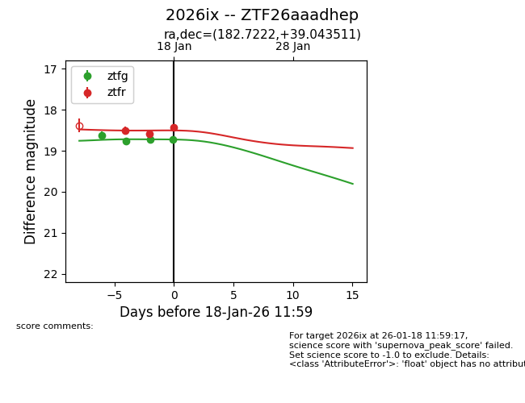
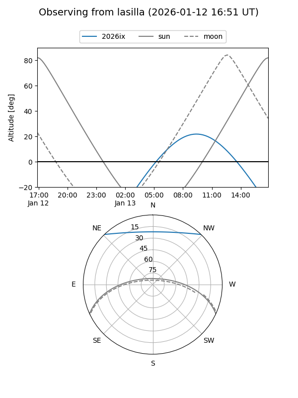
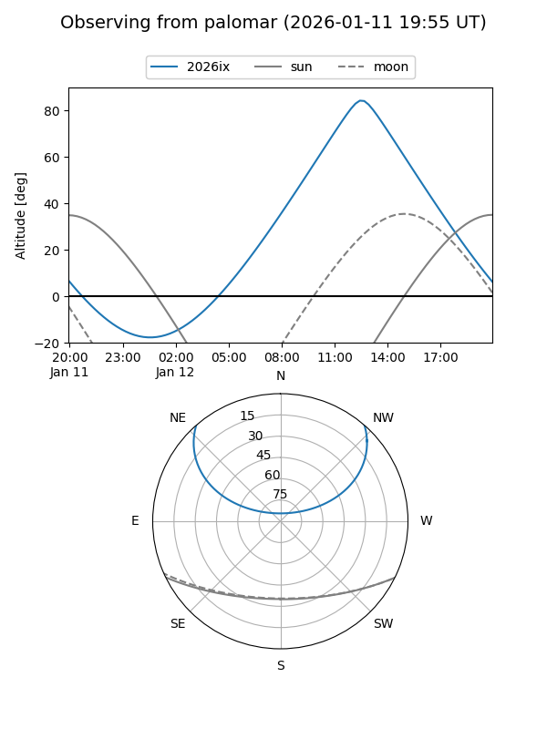
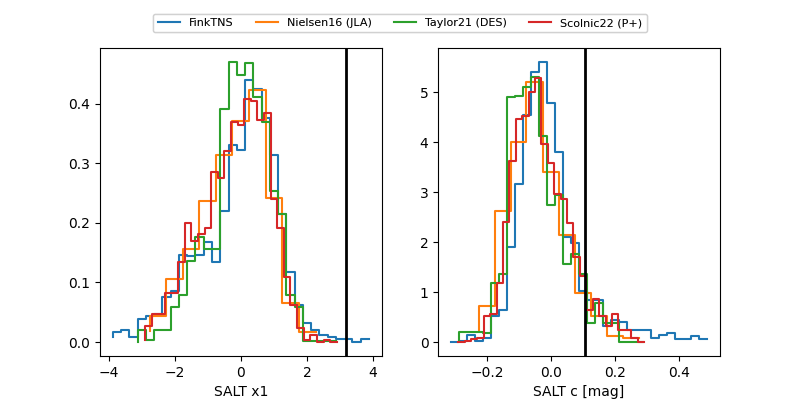

2026ix
Target 2026ix at 2026-01-14 12:30
Aliases and brokers:
FINK: link
Lasair: link
ALeRCE: link
TNS: link
YSE: link
alt names
ZTF26aaadhep (ztf,fink_ztf)
2026ix (tns,yse)
Coordinates:
equatorial (ra, dec) = 182.7222,+39.04351
equatorial (HMS+DMS) = 12:10:53.33,+39:02:36.64
galactic (l, b) = (155.7469,+75.38958)
Flags:
Photometry:
last ztfg=18.77, ztfr=18.51
2 ztfg, 1 ztfr detections
Lightcurve

Visibility


Additional plots
